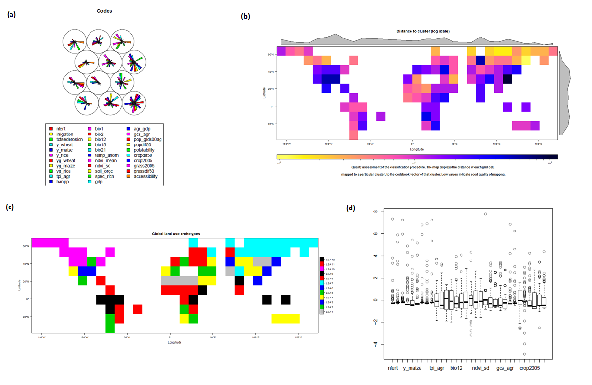
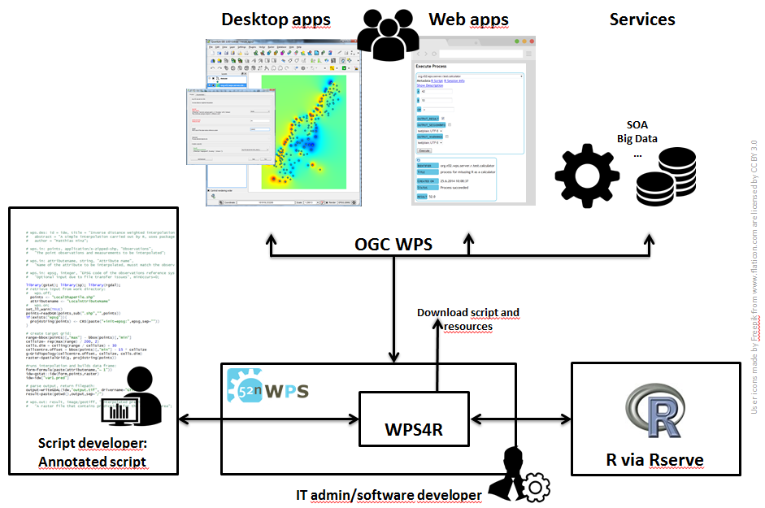

Process output
Researchers led by the Helmholtz Centre for Environmental Research (UFZ) developed a new world map of land use systems based on over 30 diverse indicators of land use intensity, climate, environment or socio-economics. They identified twelve land system archetypes (LSA) using a data-driven classification algorithm which is published as an interoperable web process. This showcase demonstrates how scientific analysis can be opened up to both an interested public as well as to fellow scientists.
Within the GLUES project a team of 52°North and UFZ took on the challenge to publish the land system archetypes process in an interoperable and reproducible fashion. The analysis was originally performed in R, a language for statistical computing in graphics. The analysis source code was extended to be published in a web processing platform. The algorithm utilizes both public and non-public datasets and has several input parameters. In the first stage the web process allows users to experiment with configuration parameters and provides access to raw output data and several visualizations. You can try that out yourself by using the form client below.
Figure: Screenshot of some of output plots based on mere 100 sampling points for illustration purposes: (a) classification information (output of the self-organizing map) showing how the input variables (colour-coded) influence each of the output classes (circles at the top); (b) global plot of "property-distance" which is a measure of classification quality; (c) the global land use archetypes map in a very coarse version; (d) statistical background information of the self-organizing map.
The client above is based on wps-js, an open source client library for connecting JavaScript applications with WPS.
Some noteworthy pieces of information about the process: (i) you can access the actual script files by clicking on the links for "R Script" and "Import: advanced-plots.R", which even tells you that the analysis is split over two files, (ii) you can access information about the execution environment by clicking on the "R Session Info" link, which gives you detailed technical information about R, and (iii) the whole process is completely reproducible on your own computer or server, since all components are open source software.
It is a valuable exercise for both the scientist and the software developers to shape the admittedly prototypical "works for me" analysis into a stable code that can handle input values selected by users. For example, the plotting functions were made flexible to allow different numbers of classes. In later stages of the process the team plans to allow users to provide additional input datasets or retrieve specific statistics based on a user-defined area of interest ("How is my study area represented by the calculated LSA?"), or to replace the internal data storage with one based on data services such as the Web Coverage Service (WCS).
Scientists often analyse geospatial data using scripts of computer code to run analytical processes. A very popular analysis language and environment used in science as well as industry is called R. Publishing geoprocesses as web services allows easy reuse and sharing of algorithms, as well as, integration in spatial information infrastructures and GIS. The Open Geospatial Consortium (OGC) Web Processing Service (WPS) interface standard enables interoperability for such applications. This means that a process can be published by one party and used by another, while having a common vocabulary to describe and execute an algorithm.
WPS4R is a processing backend for the 52°North WPS, which enables the publication and execution of R scripts as web services based on Rserve. It provides a collaboration platform for analysts, IT staff, and developers. The analysts' annotated scripts are used to provide process metadata, load input data and store and return process outputs. Script developers or scientists can easily extend their scripts with the required metadata and publish them as standardized web processes without knowledge of OGC standards or web services. IT experts operate the WPS platform and software developers integrate processes into applications based on the WPS standard, such as desktop applications (e.g. GIS), web pages, or service oriented architectures.
Figure: Architecture overview for WPS4R: regular users connect to the WPS using desktop or web applications, which internally use the WPS interface; other service oriented platforms (machine to machine communication) use the WPS interface; a scientist develops a script, annotates it with metadata and publishes it using the WPS's Web Admin Console; the IT administrator manages a server and the required software (e.g. servlet container for the WPS application and Rserve). WPS4R communicates with R via Rserve, so that R can also run on a separate (often only internally available) server.
To publish the land system archetypes analysis, which was already largely done in R, the script was annotated with the necessary metadata to publish it in WPS4R. The algorithm utilizes both public and non-public datasets and has several input parameters. To demonstrate the process in this story page, the majority of the input parameters was preconfigured and is hidden in the wps-js client above. The required input datasets were uploaded to the WPS server. If you want to access the process interface directly see the further information below.
Further information
STORY
GLUES
GEOPROCESSING
LAND USE
ARCHETYPES
REPRODUCIBLE
RESEARCH